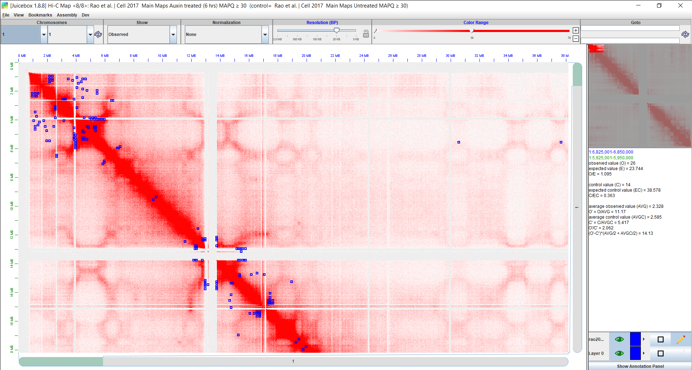

vignettes/juiceboxVisualization.Rmd
juiceboxVisualization.RmdmultiHiCcompare provides a method for detecting significant differentially interacting regions (DIRs) in Hi-C data. These DIRs are represented by pairs of genomic regions changing their interaction strength between conditions. It may be of interest for the user to visualize these DIRs on an interactive chromatin interaction heatmap in order to determine where they occur in relation to each other and numerous genomic annotations. The Juicebox software provided by the Aiden Lab https://www.aidenlab.org/ can be used to visualize your Hi-C data and multiHiCcompare results.
You will first need to download Juicebox from here: https://github.com/aidenlab/Juicebox/wiki/Download
Once you have downloaded and installed Juicebox you may want to go through the provided tutorial here: https://github.com/aidenlab/Juicebox/wiki/Visualization
If the Hi-C data you are analyzing was originally generated by the Aiden Lab, the data should be available in Juicebox by default. You will not need to perform any extra steps to open the heatmap, simply find your dataset under the File > Open menu in Juicebox. If your data did not originally generate by the Aiden Lab, you will need to obtain it in the form of a .hic file. .hic files can be read into Juicebox using the File > Open > Local... menu. If your data is not in the form of a .hic file you will need to convert it to a .hic file. This can be done using the Juicer tools command pre. Instructions for this process can be found here: https://github.com/aidenlab/juicer/wiki/Pre.
For our example, we will use the data from Rao 2017. We compared the data between the normal HCT-116 cells and the cells treated with auxin for 6 hours. The Rao 2017 data are available in Juicebox by default under File > Open menu, “Rao et al. | Cell 2017”. You will want to select the main map for “Auxin treated (6 hrs)”.
Assuming you have already analyzed the data using multiHiCcompare and you now have a Hicexp object containing the comparison results you can use the exportJuicebox function to export the list of DIRs as an annotations file for input into Juicebox. Say your Hicexp object is named rao2017 simply run the following line of code in R.
exportJuicebox(rao2017, logfc_cutoff = 2, logcpm_cutoff = 1, p.adj_cutoff = 0.001, file_name = "rao2017Annotations.txt")
This function will create a text file in your working directory containing the annotations which can then be imported into Juicebox. This file has been pre-generated, right-click and save it from here.
Assuming the “Rao et al. | Cell 2017” “Auxin treated (6 hrs)” data is loaded, click the Show Annotation Panel button at the lower right corner of Juicebox window. Alternatively, use the View > Show Annotations Panel menu. Select 2D Annotations > Add Local... tab/button, and navigate to the “rao2017Annotations.txt” file. After loading it, the “rao2017Annotations.txt” annotations will be shown in the “Select 2D annotation file(s) to open” panel - select it and click the Open button to load in into Juicebox. Select chromosome 16 in both drop-down menus below the “Chromosomes” selection toolbar and click the refresh button. The DIRs will appear as blue rectangles on the heatmap.

Here we can see a screenshot of Juicebox with the Rao 2017 data loaded and our annotations visualized on the heatmap. The blue boxes on the heatmap represent the significant DIRs. You can zoom in or scroll around in the heatmap to better understand where the DIRs occur in relation to each other and on the chromatin map. Use other annotations for more in-depth exploration of the results.